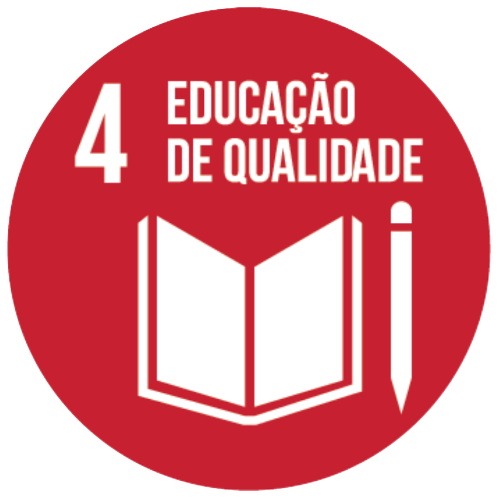

Agente de apoio educacional
Agente de apoio educacional com 8 anos de experiência na área da educação, com atuação no acompanhamento de crianças com necessidades especiais (TEA, TDAH, TOD, etc.).

Agente de apoio educacional | Prefeitura Municipal de Tarumã
Julho/2022 - Abril/2026
Inspetor de alunos | Prefeitura Municipal de Tarumã
Junho/2018 - Julho/2022
Análise e Desenvolvimento de Sistemas
UTFPR - Previsão de conclusão: 2028